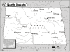

North Dakota

Attention: If you use this or any of the AIRS lists in any state, please report any bad phone numbers or emails to the webmaster. This is the responsibility of all users, including you. Thank you!
Richard Lenzmeier
EMAIL: DickLenzND_at_yahoo_dot_com
CROSSROADS: I-94 and I-29
Fargo, 58102
PHONE: (701)-799-7314 (off 8-5 M-F, see below))
VW'S: 1956 Beetle, 1964 Standard Microbus.
COMMENTS: ACVW fan since 1972 when I got first Beetle. Have owned
a few Beetles, a '66 Bus and '72 411. Experience with minor repairs, common
problems for these engines. Have rebuilt a few, but I'm no expert. Have tools (natch),
garage and driveway space. Familiar with cold weather ACVW problems, tune-ups
and repairs while lying on the snowy ground with a 30mph draft from Alberta
moving through, but I prefer not to do it that way. Bring yer own parts unless
you can wait for overnight mail, because no one in the area has any new. Few
ACVW in local junkyards anymore. No payment ever accepted, but if you want to
take one of the kids' cats when you leave, that will be thanks enough.
AVAILABLE: Try anytime. Email anytime--on the air 8-5 while at work & check
daily at home. Work # is (701)-234-4424, but expect interrogation from the
clinic operator!
I am familiar with: 36hp, Bastard40hp, 1200, 1300, 1500, 1600, fuel injection,
type4 engine
I CAN PROVIDE THE FOLLOWING SERVICES:
INTERNET ACCESS
TOOLS
TELEPHONE ACCESS
TRANSPORTATION HELP
MECHANICAL HELP
SPACE TO WORK ON BUS
STORAGE SPACE
COFFEE/TALK
CAMPING: none
SPARE ROOM: 1 night
Favorite beer type: Commercial brands
Paul Nather
EMAIL: paulnather_at_bis_dot_midco_dot_net
CROSSROADS: I-94 & Hwy 83
CITY: Bismarck
ZIP CODE: 58501
PHONE: 701-258-5309
VW'S: 1972 Transporter
COMMENTS: Had my bus for about 2 years. It's a work in progress and I'm
learning as I go. I love it.
AVAILABLE: Whenever
I am familiar with: dual carbs
I CAN PROVIDE THE FOLLOWING SERVICES
INTERNET ACCESS
TOOLS
TELEPHONE ACCESS
TRANSPORTATION HELP
SPACE TO WORK ON BUS
COFFEE/TALK
CAMPING: none
SPARE ROOM: none
Favorite beer type: I don't drink
{kind=link}